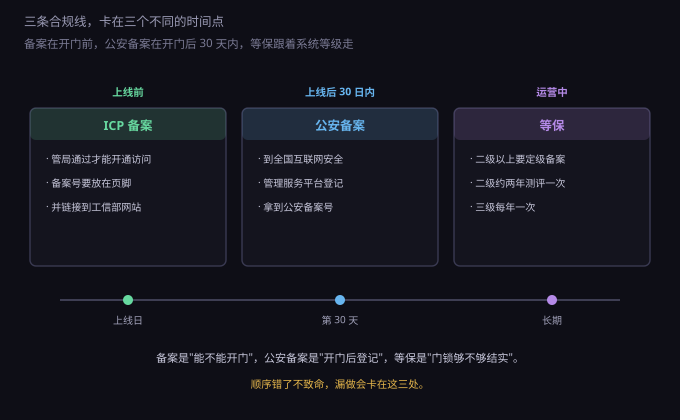
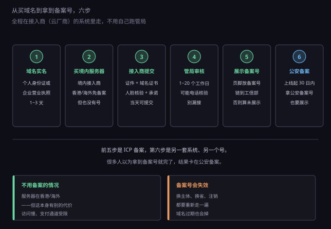
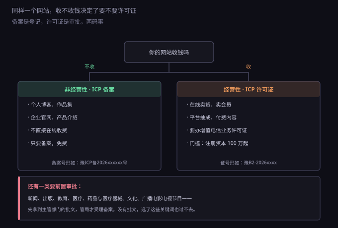

约 0.33 万字 · 3 张图 · 一个网站上线，要被三个系统问三遍
先把三件事分开，不然很容易以为"拿到备案号就完事了"。

ICP 备案在开门前。它是"你能不能开通访问"的前提—— 服务器在境内、域名解析到境内，不备案，接入商会直接阻断，网站打不开。
公安备案在开门后三十天内。它是"开门之后去登记"， 由公安机关管，和 ICP 备案是两套系统、两个号。
等保跟着系统等级走。不是所有网站都要做测评， 但只要你的系统定了二级以上，就要定级备案，并按周期做等级测评。
ICP 备案的全称是"非经营性互联网信息服务备案"，依据是 《互联网信息服务管理办法》。它对非经营性服务实行备案制， 对经营性服务实行许可制——后者是下一小节的事。
备案不用自己跑管局，全程在接入商（也就是你的云厂商）的系统里提交， 由他们代你报给通信管理局。所以第一步不是填表，是满足前置条件。

第一步，域名实名。 域名要先完成实名认证，个人用身份证、企业用营业执照。 这一步通常一到三天，没实名之前没法提交备案。 特别提一句 .cn 域名：未实名会被注册局直接 serverHold， 域名解析全部失效，表现就是"网站突然打不开"。
第二步，买境内服务器。 备案是跟"接入"绑定的，没有境内服务器就没有接入商，也就没法备案。 反过来说，服务器在香港或海外，不需要 ICP 备案——但也拿不到备案号， 而备案号是很多后续事情的前提（见第七小节）。
第三步，在接入商系统提交。 需要的东西不多：主体证件（身份证或营业执照）、域名证书、 负责人信息、网站名称和服务内容、人脸核验或幕布拍照、承诺书。 资料齐全当天就能提交。
第四步，管局审核。 各省通信管理局的时限不一样，常见是一到二十个工作日。 这段时间可能会接到核验电话，问"这个网站是做什么的""域名是不是你的"。 漏接电话是备案被退回的常见原因之一。
第五步，展示备案号。 通过之后会拿到一个号，形如"豫ICP备2026xxxxxx号"。 它必须放在网站首页底部，并且链接到工信部备案系统 （beian.miit.gov.cn）。只写号不挂链接，严格说算未按规定展示。
这里补一个容易搞混的粒度问题。备案分三层： 主体（你这个人或这家公司）、网站（一个网站一条备案记录）、 域名（挂在网站下面）。 同一个主体可以备多个网站，每个网站有自己的备案号； 一个网站也可以挂多个域名（提交时一起报，叫多域名备案）。 但反过来不行——一个域名只能备在一个主体下，想把域名从个人转到公司， 要走"备案主体变更"，等于重新审一遍。
备案信息不是一次填完就冻结的。负责人换手机号、换邮箱、换服务器 IP、 换接入商，都要在系统里做变更。尤其是换接入商：新接入商要给你做"接入备案"， 老接入商那边解除，中间有几天两边都不认，网站可能短暂打不开。 这件事要提前安排，别等服务器到期那天才动手。
这里要区分两种情形，因为处罚完全不同。
该备案没备案（非经营性）：由省级电信管理机构责令限期改正； 拒不改正的，责令关闭网站。 更直接的是接入商这一关——多数云厂商在检测到未备案域名解析到境内服务器时， 会先阻断访问。所以现实中的第一后果不是罚款，是网站直接打不开。
该办许可证没办（经营性）：这个重得多。有违法所得的， 没收违法所得并处三到五倍罚款；没有违法所得或不足五万元的， 处十万元以上一百万元以下罚款；情节严重的责令关闭网站。
还有一个常被忽略的点：备案号是会失效的。 换主体、跨省变更、域名过期没续、主体注销，都会导致备案被注销。 注销之后域名还解析在境内服务器上，就会出现"网站昨天还好好的，今天打不开"。 换接入商也要办接入备案，不是把服务器一搬就完事。
备案和许可证是两码事：备案是登记，许可证是审批。 分界线只有一条：你的网站是否通过互联网有偿提供信息服务。

个人博客、作品集、企业官网、产品介绍页——不直接在线收费，走备案就够了。
在线卖会员、卖课程、卖付费内容、平台抽成——属于经营性， 要办增值电信业务经营许可证（常说的 ICP 证）， 由省级通信管理局审批。门槛包括注册资本（省内一般一百万元起）、 社保在职人员、场地与制度材料，周期按月算。
这里有个容易搞错的地方：自己开网店卖自己的货，通常不算"经营性互联网信息服务"， 不需要 ICP 证；但如果你做的是平台，让第三方商家入驻并从中抽成， 那属于"在线数据处理与交易处理业务"，要办的是 EDI 许可证。 这两张证经常被混着叫，实际管的业务不同。
还有一类要前置审批：新闻、出版、教育、医疗、 药品与医疗器械、文化、广播电影电视节目。 这些领域要先拿到主管部门的批文，管局才受理备案。 所以给网站起名、选服务内容时，别随手写"在线教育""医疗咨询"—— 写了就得拿出批文，拿不出就卡在那里。
这一套的依据是《计算机信息网络国际联网安全保护管理办法》： 使用计算机信息网络国际联网的单位，应当自网络正式联通之日起 三十日内，到公安机关指定的受理机关办理备案手续。
现在全程线上，在"全国互联网安全管理服务平台"提交。 要填的是主体信息、网站信息（域名、IP、服务类型）、负责人身份信息， 上传域名证书。审核通过后会拿到一个公安备案号，同样要展示在网站底部。
它和 ICP 备案最容易混的地方是：两个号、两个系统、两个部门。 拿到 ICP 备案号不等于完成了公安备案，反之亦然。 顺序上 ICP 在前（因为要先有备案号才能开通访问），公安备案在后。
另外，如果你的网站有交互功能——评论、论坛、弹幕、 私信、用户投稿、直播——还牵出一件事：安全评估。 《具有舆论属性或社会动员能力的互联网信息服务安全评估规定》要求， 这类服务上线前要自行做安全评估，并在网站公示评估结果。 一个带评论区的个人博客，严格来说也在范围内。
等保是"网络安全等级保护"的简称，《网络安全法》第二十一条把它写成了法定义务。 它把系统按重要程度分五级，绝大多数企业系统落在二级或三级。
二级和三级的大致区别：
等保容易被误解成"买个安全设备"。它实际是一整套东西： 定级报告、备案证明、安全管理制度、机房与网络的技术措施、应急预案、测评报告。 设备只是其中一部分，制度文件反而是检查时的重点。
对个人开发者和小团队来说，现实的做法是： 先判断自己的系统大概落在几级（多数小项目是二级）， 做定级备案，把基本的安全措施（访问控制、日志、备份、补丁）落实， 测评按属地公安机关的要求安排。不要一上来就想着"过三级"， 先搞清楚自己的系统到底算几级。
定级的流程比大多数人想的简单，但比"填个表"复杂： 自主定级（按业务受损害后的影响范围判断）→ 专家评审（三级一般要做，二级通常不需要）→ 到公安机关备案→ 测评→ 整改。 定级不是自己说了算，公安备案时要提交定级报告， 备案部门认为定低了的，会要求重新定。
不履行等保义务的后果写在《网络安全法》第五十九条： 责令改正、给予警告；拒不改正或者导致危害网络安全等后果的， 处一万元以上十万元以下罚款，直接负责的主管人员处五千元以上五万元以下罚款。
这一小节是从实际操作里攒出来的，按遇到频率排。
一、先上线再备案。 备案审核期间，多数省份要求网站不能正常访问（有的只允许挂一个"备案中"的静态页）。 所以正确顺序是：买域名 → 实名 → 买服务器 → 提交备案 → 等通过 → 再部署上线。 反过来做，会遇到"网站做好了但打不开"的尴尬。
二、个人备案写成公司业务。 个人备案的网站名称和服务内容有明确限制，不能出现"商城""公司""平台"这类词， 也不能做经营性内容。写了大概率被退回，改起来又要重排队。
三、备案号只写不链。 备案号要链接到工信部网站，这是明文要求。很多模板只放了一行文字， 审核抽查时算未展示。
四、以为香港服务器就没事了。 服务器在香港，确实不用 ICP 备案。但注意两件事： 一是境内主体在境外服务器上提供服务，仍然受境内法律管辖， 内容、个人信息这些义务一个都不少； 二是备案号是很多服务的前置条件——国内 CDN、短信签名、部分支付通道、 小程序上线，都会问你要备案号。省掉备案，往往在别处补回来，还更麻烦。
五、忘了公安备案。 拿到 ICP 备案号、网站跑起来了，就以为结束了。 三十天的期限是从"网络正式联通"起算，很容易过期。 过期再补，要写情况说明，有些地方还会先责令整改。
六、评论功能不做安全评估。 带用户发言功能的网站，属于"具有舆论属性或社会动员能力"， 上线前要安全评估并公示。这一条最容易被漏，因为它不在备案流程里， 要自己想起来。